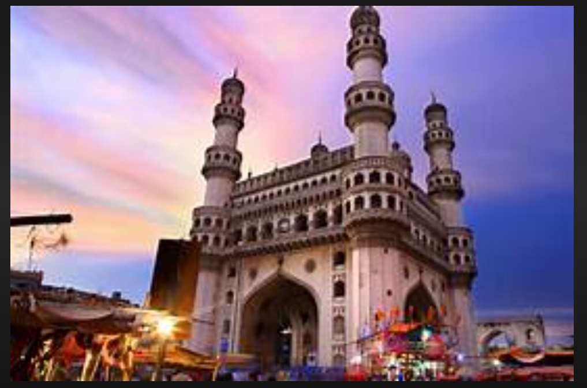

Hyderabad is the capital city of Telangana and one of the fastest-growing metropolitan cities in India. It is popularly known as the "City of Pearls" because of its famous pearl markets and rich history. Hyderabad is home to iconic landmarks such as the Charminar, Golconda Fort, Hussain Sagar Lake, and Ramoji Film City. The city is also a major IT hub, with many global companies like Microsoft, Google, Amazon, Infosys, TCS, and Accenture having offices in HITEC City and Gachibowli. Hyderabad is famous for its delicious Hyderabadi Biryani, Haleem, and Irani Tea, attracting food lovers from all over the world. The city offers excellent educational institutions, healthcare facilities, shopping malls, and entertainment centers, making it one of the best places to live and work. Hyderabad perfectly blends its historical heritage with modern technology, making it an attractive destination for tourists, students, and professionals.